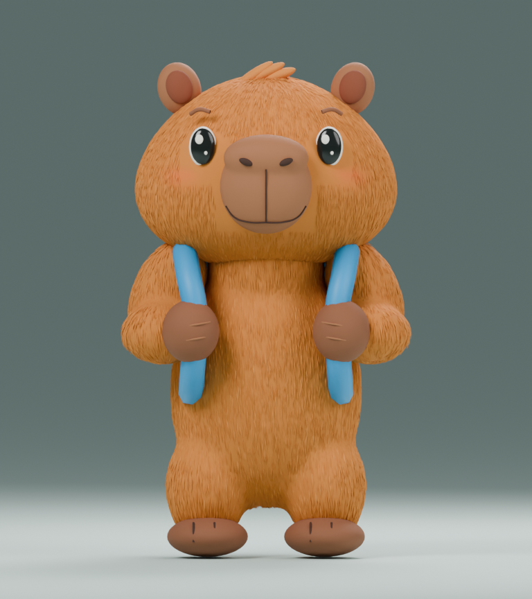
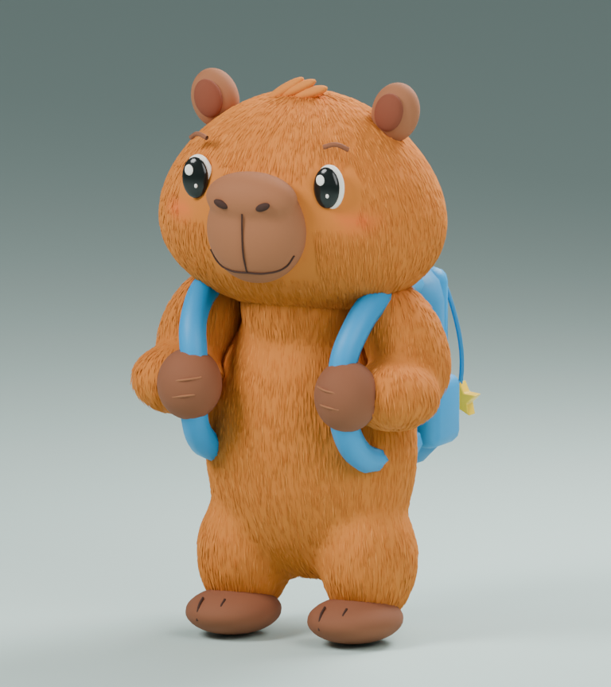
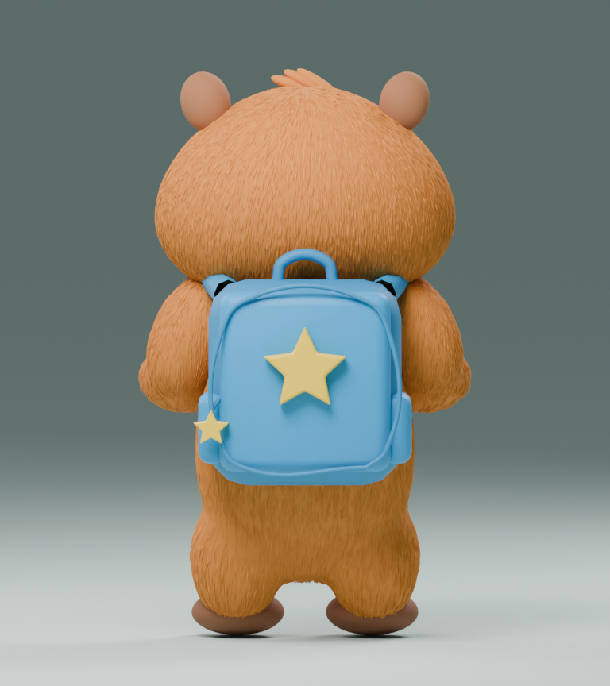

ETAPA 02a · v004 · REVISIÓN ARTÍSTICA
Corrección de la capibara
Hocico vertical integrado, fosas nasales, cabeza ancha en las mejillas, orejas menores, ojos con menos blanco, manos marrones sujetando correas y relieve de pelaje fino. Los renders de v004 proceden del mismo archivo Blender entregado.
Modelo GLB · Archivo Blender · Plan y punto de reanudación
Referencia aprobada frente al modelo
Referencia aprobada · encuadre de la hoja original

Modelo v004 · render real, pendiente de aprobación
Antes y después
 v001 · descartada visualmente
v001 · descartada visualmente

v004 · render real del modelo corregido
 Objetivo artístico aprobado · referencia, NO render del modelo entregado
Objetivo artístico aprobado · referencia, NO render del modelo entregado
Vistas del modelo corregido
Frente
 Perfil
Perfil

Espalda
Pendiente de aprobación visual. No es una réplica exacta de la ilustración ni la malla móvil final. Sin rig, animaciones o colisiones. 183.182 triángulos; GLB sin compresión: 8,30 MB. La siguiente etapa técnica requiere transferir detalle a texturas, reducir geometría, preparar deformaciones y probar en el teléfono objetivo.
Galería local sin conexión, no visor interactivo. CPU con dos hilos, 768 × 864 px. La iluminación de estudio no sustituye la prueba en PlayCanvas.